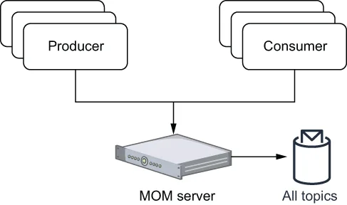
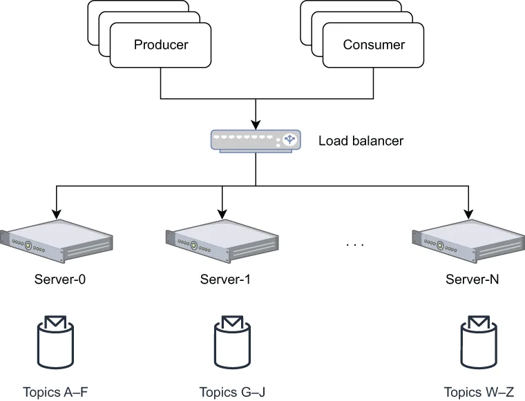

The first category of messaging systems is often referred to as message-oriented middleware (MOM), which was designed to provide inter-process communication and application integration between distributed systems running on different networks and operating systems. One of the most prominent MOM implementations was IBM WebSphere MQ, which debuted in 1993.
第一类消息系统通常被称为面向消息的中间件（MOM），其设计目标是为运行在不同网络与操作系统上的分布式系统提供进程间通信与应用集成。最著名的 MOM 实现之一是 IBM WebSphere MQ，它于 1993 年首次面世。
The earliest implementations were designed to be deployed on a single machine that was often located deep within the company’s datacenter. Not only was this a single point of failure, it also meant that the scalability of the system was limited to the physical hardware capacity of the host machine because this single server was responsible for handling all client requests and storing all messages, as shown in figure 1.6. The number of concurrent producers and consumers these single-server MOM systems could serve was limited by the bandwidth of the network card, and the storage capacity was limited by the physical disk on the machine.
最早的实现被设计为部署在单台机器上，而这台机器往往位于公司数据中心的深处。这不仅构成了单点故障，还意味着系统的可扩展性受限于宿主机的物理硬件容量——因为这一台服务器要负责处理所有客户端请求并存储所有消息，如图 1.6 所示。这类单服务器 MOM 系统能够支撑的并发生产者与消费者数量受限于网卡带宽，而存储容量则受限于机器上的物理磁盘。

\Figure 1.6 Message-oriented middleware was designed to be hosted on a single server and therefore hosted all of the message topics and handled requests from all clients.
图 1.6 面向消息的中间件被设计为部署在单台服务器上，因此承载了全部消息主题，并处理来自所有客户端的请求。
To be fair, these limitations were not limited to just IBM, but are rather a limitation of all messaging systems that were designed to be hosted on a single machine, including RabbitMQ and RocketMQ, among many others. In fact, this limitation wasn’t limited to just messaging systems of this era, but rather was pervasive across all types of enterprise software that were designed to run on one physical host.
公允地说，这些局限并非 IBM 独有，而是所有被设计为部署在单台机器上的消息系统共有的局限，包括 RabbitMQ 和 RocketMQ 等众多系统。事实上，这种局限也不只存在于那个时代的消息系统，而是普遍存在于所有被设计为运行在单一物理主机上的企业软件之中。
Clustering
集群
Eventually these scalability issues were addressed though the addition of clustering capabilities to these single-server MOM systems. This allowed multiple single-service instances to share the processing of the messages and provide some load balancing, as shown in figure 1.7. Even though the MOM was clustered, in reality it just meant that each single-service instance was responsible for serving and storing messages for a subset of all the topics. A similar approach, called sharding, was taken by relational databases during this period to address this scalability issue.
最终，这些可扩展性问题通过为单服务器 MOM 系统增加集群能力而得到缓解。这使得多个单服务实例可以分担消息的处理，并提供一定的负载均衡，如图 1.7 所示。尽管 MOM 实现了集群化，但实际上这仅仅意味着每个单服务实例负责为全部主题中的一个子集提供服务和存储消息。关系型数据库在同一时期也采用了一种被称为分片（sharding）的类似思路来解决这一可扩展性问题。

\Figure 1.7 Clustering allowed the load to be spread across multiple servers instead of just one. Each server in the cluster was responsible for handling only a portion of the topics.
图 1.7 集群使得负载可以分散到多台服务器上，而不是仅由一台承担。集群中的每台服务器只负责处理其中一部分主题。
In the event of topic “hot-spots,” the unlucky server assigned that particular topic could still become a bottleneck or potentially run out of storage capacity as well. In the event that any one of these servers in the cluster were to fail, it would take all of the topics it was serving down with it. While this did minimize the impact of the failure on the cluster as a whole (i.e., it continued to run) it was a single point of failure for the particular topics/queues it was serving.
一旦出现主题"热点"，被分配到该主题的那台不走运的服务器仍然可能成为瓶颈，甚至可能耗尽存储容量。如果集群中任意一台服务器发生故障，它所服务的所有主题都会随之一起下线。虽然这种做法确实把故障对集群整体的影响降到了最低（即集群仍在运行），但对于它所服务的那些特定主题/队列而言，它依然是单点故障。
This limitation required organizations to meticulously monitor their message distribution in order to align their topic distribution to match their underlying physical hardware and ensure that the load was evenly distributed across the cluster. Even then, there was still the possibility that a single topic could be problematic. Consider the scenario where you work for a major financial institution, and you want a single topic to store all the trade information for a particular stock and provide this information to all the trade desk applications within your organization. The sheer number of consumers and volume of data for this one topic could easily overwhelm a single server that was dedicated to serving just that topic. What was needed in such a scenario was the ability to distribute the load of a single topic across multiple machines, which, as we shall see, is exactly what distributed messaging systems do.
这一局限要求组织必须细致地监控其消息分布，以便让主题分布与底层物理硬件相匹配，并确保负载在集群中均匀分布。即便如此，单个主题仍然有可能出问题。设想这样一个场景：你在一家大型金融机构工作，希望用一个主题存储某只股票的全部交易信息，并把这些信息提供给组织内所有的交易台应用。仅就这一个主题而言，其消费者数量和数据量就可能轻易压垮一台专门为该主题提供服务的服务器。在这种场景下，所需要的正是把单个主题的负载分散到多台机器上的能力——正如我们将看到的，这正是分布式消息系统所做的事情。